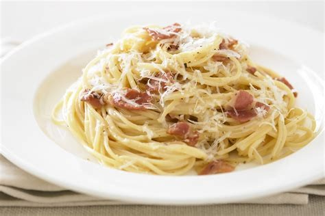
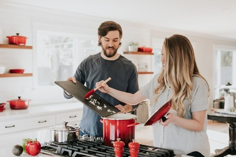

La pasta carbonara origina de la regió del Laci (Roma) i combina el gust intens del formatge amb la cremosa salsa d’ou. No porta crema; la textura s’aconsegueix escalfant els ous amb el formatge i l’aigua de cocció de la pasta.
Utilitza spaghetti o bucatini. Cuina la pasta al dente i reserva almenys 1 tassa d’aigua de cocció per emulsionar la salsa. Escalfa guanciale o pancetta fins que es torna cruixent i es desprengui el greix.
Bat els ous amb pecorino o parmesà ratllat i abundant pebre negre. Retira la pasta del foc i afegeix la barreja d’ous i formatge (no bullir), combinar ràpidament perquè la salsa quedi sedosa sense quallar.
Servir immediatament amb més formatge ratllat i pebre. Les variacions contemporànies poden incloure ceba, all o avellanes, però la recepta tradicional es manté minimalista i de gust intens.
Galeria de preparació
